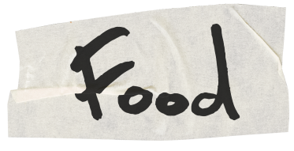
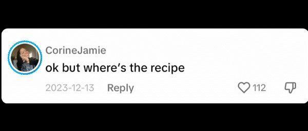
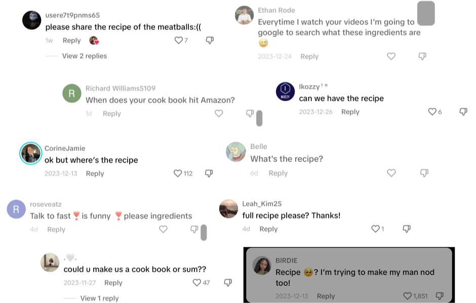
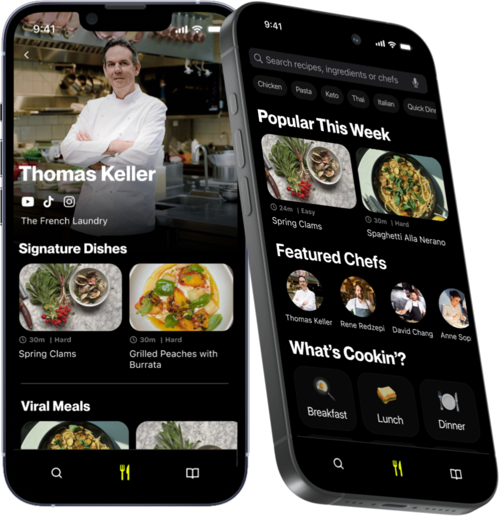
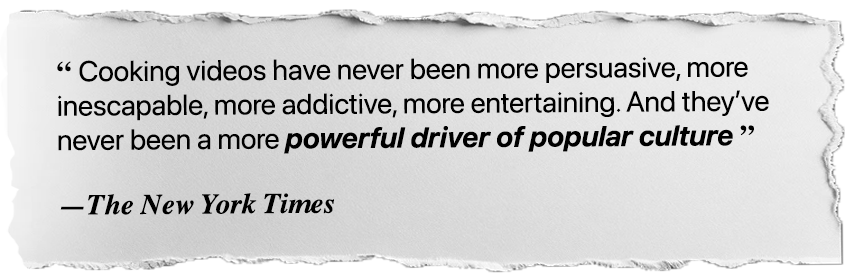
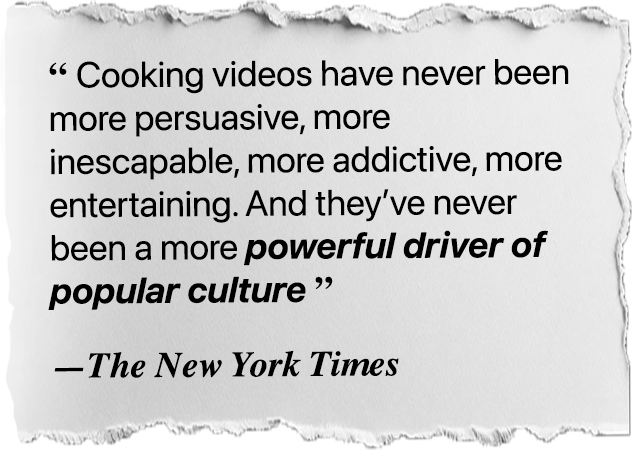

 is a universal language.
And cooking content is everywhere. But recipe apps are still
And nobody is helping cooking creators monetize.


We wanted a place to find good recipes that are easy to follow, so we built one - with creators first in mind.

Because we believe that creators are the future of food.

is pretty simple.
1. Create the best-in-class follow-along recipe experience for consumers, starting with a mobile app + custom landing pages purpose-built to convert viewers to subscribers.
2. Populate the app with recipes from top creators.
3. Monetize via premium subscription. Fans get recipes, creators get paid
2. Populate the app with recipes from top creators.
3. Monetize via premium subscription. Fans get recipes, creators get paid
Our Goal
Empower cooking creators of all sizes to make a living by bridging the gap between their work and their fans.
Empower cooking creators of all sizes to make a living by bridging the gap between their work and their fans.